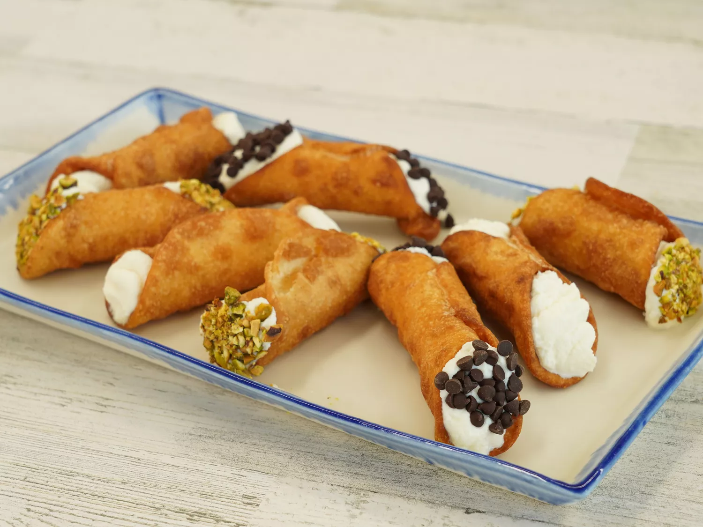

Home
Cannolis

Description
Cannoli are Sicilian pastries consisting of a tube-shaped shell of fried pastry dough filled with a sweet, creamy ricotta cheese filling. The name comes from the Italian word cannolo, meaning "little tube," which originally referred to the reed stalks used as molds to fry the shells.
Ingredients
- 3 cups all-purpose flour
- ¼ cup white sugar
- ¼ teaspoon ground cinnamon
- 3 tablespoons shortening
- ½ cup sweet Marsala wine
- 2 tablespoons water
- 1 tablespoon distilled white vinegar
- 1 large egg
- 1 egg yolk
- 1 egg white
- 1 quart oil for frying, or as needed
Steps
- Mix flour, sugar, and cinnamon together in a medium bowl; cut in shortening until crumbly.
- Make a well in the center; add Marsala wine, water, vinegar, egg, and egg yolk.
- Mix with a fork until the dough becomes stiff; finish kneading by hand on a clean surface, adding a bit more water if needed for about 10 minutes. Cover with plastic wrap and refrigerate for 1 to 2 hours.
- Divide cannoli dough into three balls; flatten each one just enough to get through the pasta machine. Roll 1 ball of dough through successively thinner settings until reach the thinnest setting. Dust lightly with flour if necessary.
- Place dough sheet on a lightly floured surface; cut out 4 to 5-inch circles using a cutter or large glass.